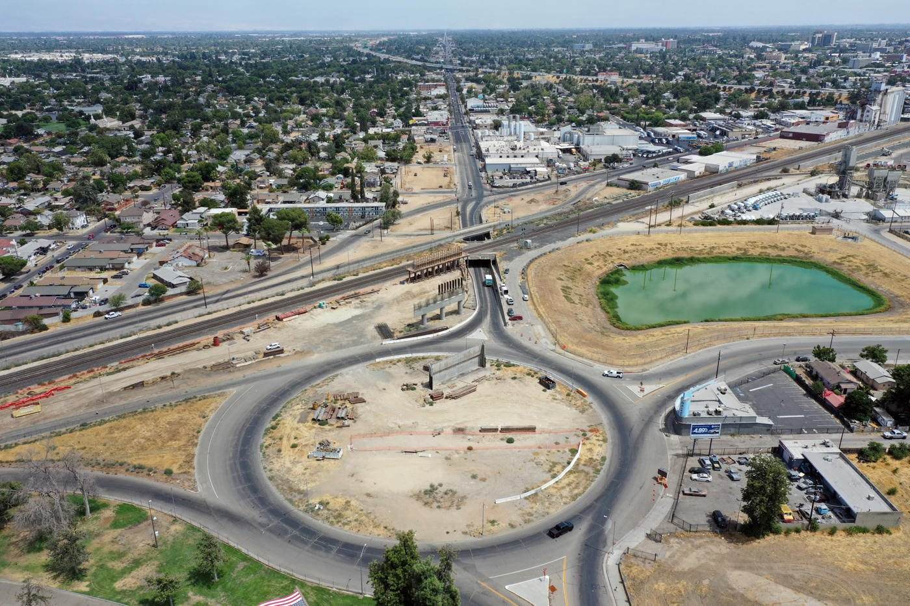
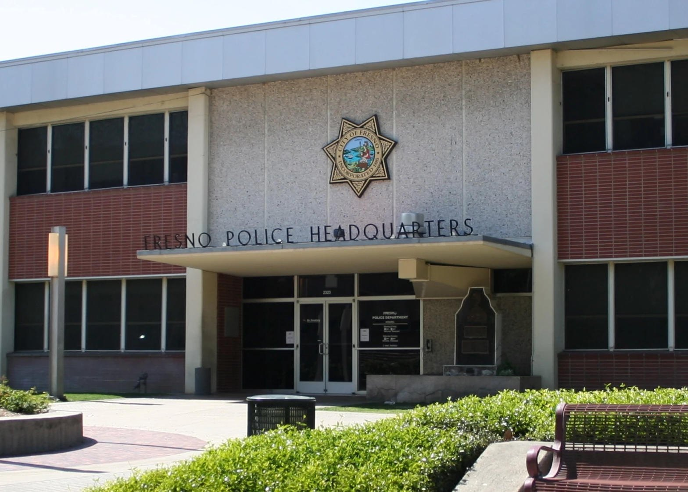

Lord of the street and of the record, keep us from two lies. Keep us from the lie that silence is holiness. Keep us from the lie that a chase is justice. Give us light that does not hunt. Amen.
Before three in the morning on Monday, near Abby Street and Belmont Avenue, Fresno police say a white sedan went the wrong way on North Abby, struck a man in his thirties, carried him on the roof, and threw him into the roadway. Investigators said this was not an accident. They said the driver targeted the pedestrian. The man was critical and unstable. The driver is still wanted. That is the public fact. We will not invent a name, a motive, or a verdict the court has not entered.
Leviticus 19:16
Do not spread slanderous gossip among your people. Do not stand idly by when your neighbor’s life is threatened. I am the Lord.
Two commands sit in one verse. Do not slander. Do not stand idle while a life is under the wheels. A city that only repeats rumors fails the first. A church that only waits for a better world fails the second.

Surveillance video, as reported by the local news, shows a man approaching the sedan as it left a lot, speaking, then running after it with his arms raised. About twenty seconds later the same car came back. He ran toward it. The driver swerved the wrong way and used the vehicle as the instrument. Viewers will argue about who started it. A running man looks chaotic. A clean car looks orderly. Do not let the camera’s bias become your theology. Police already said the strike was targeted. They also said they do not know why. Hold both sentences.
I have stood in that same kind of minute. On foot and on a bicycle I have told drivers they were out of control and needed to slow down. At Thomas and Broadway the intersection is a known danger. The answer was not a slower car. It was a U-turn, a phone in my face, and a false charge meant to flip the script. That smear is slander used as a tactic. We will not rehearse the lie. We will name the move and leave it.
Exodus 23:1-2
You must not pass along false rumors. You must not cooperate with evil people by lying on the witness stand. You must not follow the crowd in doing wrong. When you are called to testify in a dispute, do not be swayed by the crowd to twist justice.
The right that remains is the public record. On a California street, video of what any passerby can see is generally lawful. A driver does not own the roadway image because it is inconvenient. Audio of a private talk is a narrower rule. A shouted scene in the open is not a confession booth. You may hold the phone. You may refuse to delete it. You may refuse the claim that recording is the aggression.
Here is the measured line, and it is the whole sermon in four sentences. You may record what happens on a public street. You may refuse to delete it. You may refuse the lie that follows. You may not stand in front of a moving vehicle to prove the point.
Get out of the lane. Keep the plate. Keep the color. Keep the direction. Call Fresno Police at 559-621-7000 when you are clear. If the shot breaks because you stepped onto the sidewalk, the shot still did its work. A living witness with a messy clip is worth more than a perfect clip from the asphalt. If they U-turn, the event has changed. Leave the path. Do not chase a departing car to finish a take. Do not ask a person on a bicycle to hold two tons of steel accountable with a body.
Romans 12:17-19
Never pay back evil with more evil. Do things in such a way that everyone can see you are honorable. Do all that you can to live in peace with everyone. Dear friends, never take revenge. Leave that to the righteous anger of God. For the Scriptures say, “I will take revenge; I will pay them back,” says the Lord.
Two teachings, and the ditch on each side
Jehovah’s Witnesses teach that Christ’s followers are no part of the world. They refuse office, party tickets, and campaigns to change governments. They respect the superior authorities, obey the law, and leave criminal punishment to Caesar. They look to God’s Kingdom to solve what human systems cannot. That teaching can keep a congregation from becoming a mob. It can also train a habit. If every public wound is filed under “the world will pass away,” a neighbor can bleed while the faithful stay clean.
John 17:16-18
They do not belong to this world any more than I do. Make them holy by your truth; teach them your word, which is truth. Just as you sent me into the world, I am sending them into the world.
Notice the sending. Not of the world, and still sent into it. Neutrality toward parties is not neutrality toward a hood used as a weapon. Witness instruction on crime now says elders are not a substitute for the police, and that a two-witness rule for congregation discipline does not block a report to the authorities. If that is true inside a Kingdom Hall, it is true on Abby. Waiting on the Kingdom does not require you to pocket the phone.
The opposite teaching has its own ditch. A church that tells its people to document those who interfere with public safety can speak a true word. Light belongs in the street. That church becomes a danger the moment “document” is preached as “intercept.” Aggression is not holy because the cause is righteous. The camera is not a warrant. The sidewalk is the pulpit. The travel lane is not.
Ephesians 5:11-13
Take no part in the worthless deeds of evil and darkness; instead, expose them. It is shameful even to talk about the things that ungodly people do in secret. But their evil intentions will be exposed when the light shines on them.
Expose. Do not join. That is the contrast worth keeping. Jehovah’s Witness teaching, taken at its best, refuses the hunt. A documenting church, taken at its best, refuses the dark. Taken at their worst, one hides the lamp and the other walks it into traffic. High Tower will not baptize either worst case.

Romans 13:3-4
For the authorities do not strike fear in people who are doing right, but in those who are doing wrong. Would you like to live without fear of the authorities? Do what is right, and they will honor you. The authorities are God’s servants, sent for your good. But if you are doing wrong, of course you should be afraid, for they have the power to punish you. They are God’s servants, sent for the very purpose of punishing those who do what is wrong.
This is not a hymn to every badge. It is a fence against private war. The man in the hospital is not a symbol. Pray for him. If you have video or a plate from Monday, carry it to the police, not to a comment thread that wants a neck. Drivers, a ton of steel is not an argument. Walkers and riders, you are not disposable. Churches, do not teach your people to be idle, and do not teach them to be projectiles.
Micah 6:8
No, O people, the Lord has told you what is good, and this is what he requires of you: to do what is right, to love mercy, and to walk humbly with your God.
Do what is right: keep the record. Love mercy: leave the lane, and leave revenge. Walk humbly: you do not know the whole motive on that video, and you do not need to in order to say a targeted car is evil.
Charge
If you preach, preach this and stop. Get out of the lane. Keep the record. Refuse the delete demand. Refuse the slander that follows a warning. Call the number. Do not send a bicycle after a sedan. Do not confuse Jehovah’s neutrality with a closed hand over a camera. Do not confuse a church’s call to document with a license to occupy the kill zone. The right stays. The body yields the pavement. The Lord sees both.
Sources
- Vincent Camarillo, “Apparent intentional hit-and-run caught on camera in Fresno,” ABC30, September 15, 2026. Abby and Belmont, about 2:30 a.m. Monday, white sedan, wrong way on North Abby, man in his 30s carried on the roof, critical and unstable, driver wanted. Police: not an accident, targeted pedestrian, reason unknown.
- KSEE/KGPE, “Driver targeted this pedestrian,” September 14, 2026. Lt. Alfonso Castillo on scene finding.
- California public-recording rule of thumb: video of what is in public view from a place you may lawfully stand is generally permitted. Penal Code 632 governs confidential communications, not every open-street shout. This page is not legal advice.
- jw.org FAQ, “Why Do Jehovah’s Witnesses Maintain Political Neutrality?” Official position: no lobbying, no party votes, no office, no campaign to change governments; respect for superior authorities; Romans 13:1.
- Watchtower study, May 2019, “Love and Justice in the Face of Wickedness.” Elders leave criminal matters to secular authorities; the two-witness rule for congregation action does not block reporting a crime.
- Photographs: Belmont Avenue grade separation, California High-Speed Rail / BuildHSR project page. Fresno Police Headquarters exteriors from local news photographs of the public building. No private residences. No generated people.